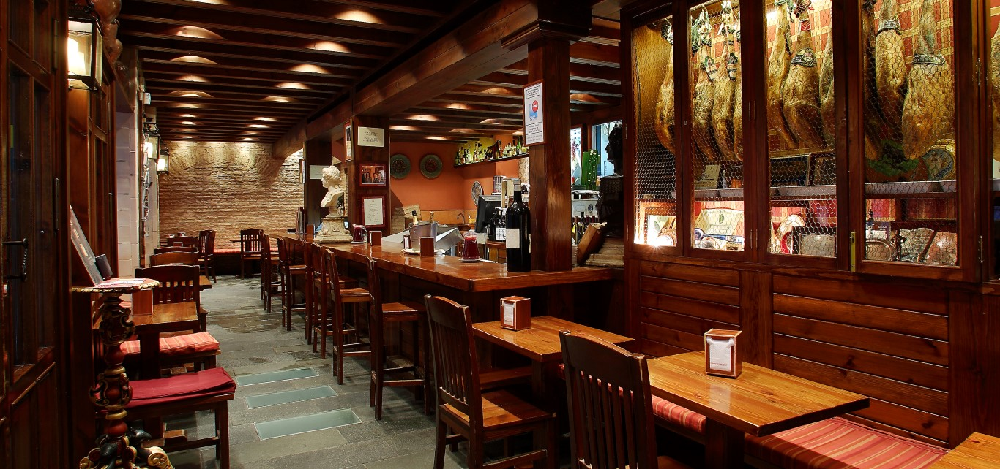
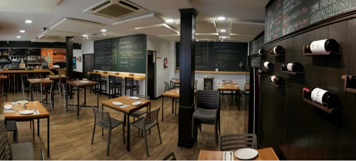
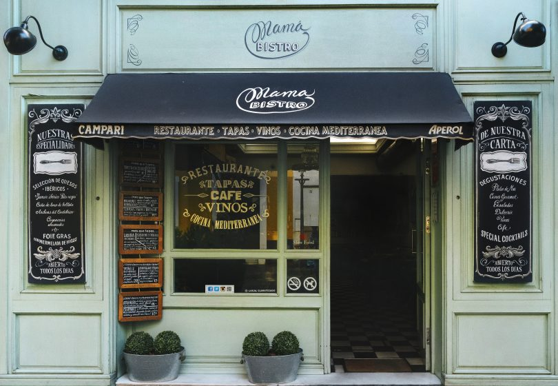

Restaurante Casa Robles
Si hay algo que verdaderamente destaca de Casa Robles, es la preocupación por ofrecer la mejor atención a sus clientes.
Cada día, ellos son la estrella del restaurante.Con capacidad para albergar hasta 150 comensales entre sus tres plantas en la calle Álvarez Quintero,en Casa Robles se respira un ambiente cálido y auténticamente andaluz.
Casa Robles no solo destaca por su cocina tradicional internacionalmente reconocida, sino que cuenta con la carta de vinos más amplia de Sevilla.
Bar Catedral
Disfruta de la ciudad y el ambiente de la calle Mateos Gago, donde se encuentra el bar Catedral. Puedes vivir las sensaciones de la experiencia de un bar de tapas tradicional en el interior o en nuestra terraza, con vistas a la Catedral y la Giralda.
Generosa variedad en tapas y platos de comida andaluza, elaborados con productos frescos de la tierra, en una cocina de vanguardia. Realizando recetas tradicionales, con un toque de diferencia.
Bar Pelayo
El restaurante se distribuye en dos salones. El primero con una impresión de bodega taurina, y toques de universos alternativos y de ciencia ficción tales como el de Blade Runner. El salón del interior cuenta con guiños a conocidos barrios de Nueva York, fotografías de autores vanguardistas del siglo XX y una iluminación multicolor.
La carta cuenta con una mezcla entre la cocina tradicional y las tendencias culinarias más vanguardistas con productos frescos y los vinos de las mejores bodegas de España.

Tapa Travedo
Tradevo es TRAdición + EVOlución. Es cocina sencilla, emocional, sincera, elegante, realizada con todo el tiempo y el cuidado que precisa. Cada plato es fruto de un minucioso estudio, contando con los mejores proveedores, que destacan por su compromiso y su calidad. Pescados de las lonjas de Conil e Isla Cristina, harinas artesanales, tomates de Almería, además de excepcionales carnesy quesos.
Restaurante Brunilda
En pleno Centro de Sevilla, en una de esas calles estrechas con sabor antiguo se encuentra La Brunilda Tapas. Un sito acogedor, de techos altos y con una comida especial que mezcla a la perfección la selección de materias primas con la elaboración de cada uno de sus plato. Los maridajes son espectaculares y la combinación de sabores inolvidable. Por muchos motivos, La Brunilda Tapas es un sitio especial y diferente que nadie debería dejar de visitar.

La Monda: VINOS Y TAPAS
Las mejores Tapas en Sevilla. Cocina de raíces mediterráneas con nuestro toque particular. Explosión de sabor.
En La Monda tenemos las Mejores Tapas de la gastronomía Sevillana. Descubre nuestra mezcla de sabores y combinaciones que te harán viajar por todo el mediterráneo. Para la elaboración de nuestras tapas usamos productos frescos y de primera calidad. Disfruta de las sensaciones gastronómicas que te ofrece La Monda.

Mama Bistro
Inspirado por las tres grandes cocinas del viejo continente, cocina francesa, española e italiana, pero siempre con un ojo en las influencias de Oriente y del Mediterráneo. Nuestro objetivo es dejar que estas influencias gastronómicas se combinen en los platos que proponemos.
Productos de primera calidad, principalmente de la región, con técnicas modernas pero poniendo en cada detalle el amor y el cuidado de una Mamá en la cocina de su hogar. Acompañado de una gran variedad de diversos vinos que pertenecen a la geografía española, de norte a sur, apostando por los vinos singulares y con mucho carácter
Bar de Tapas Carmela
El Bar de tapas Carmela es un lugar para olvidar las prisas, sentarse en su magnífica terraza y degustar sus magníficas tapas.
Bar Carmela se caracteriza por su pluralidad cultural, tanto en servicio como en la comida que se ofrece. Disfruta de una surtidísima carta de tapas tradicionales sevillanas, innovadoras y con un toque divertido.

El rincón de Beirut
¿Comer en Sevilla y no caer en la rutina de las tapas?
Ahora es posible en El Rincón De Beirut. Ven y degusta los mejores platos de la gastronomía libanesa. Comida 100% halal & tradicional.